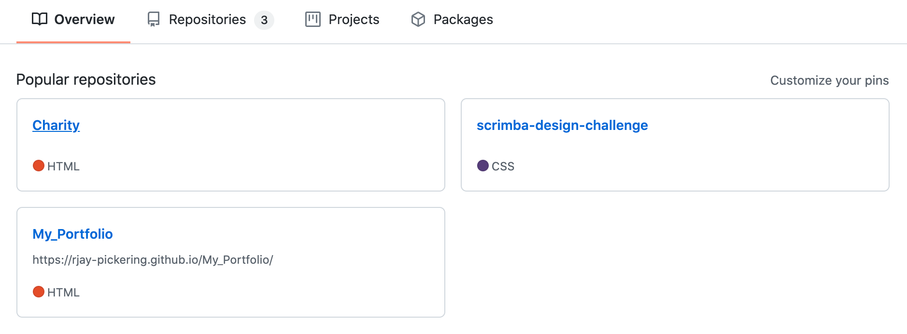
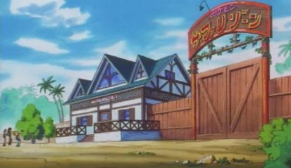
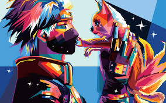
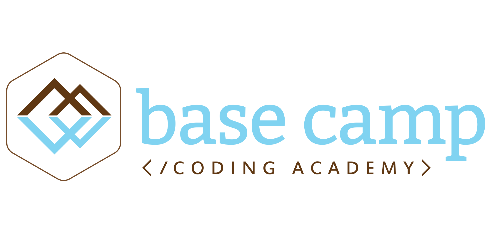

RJay Pickering

These are my first three websites that I have made using only HTML and
CSS. Charity is about a campaign to reboot Black Ops for the newer gen
consoles. Scrimba is a challenge website that taught me a lot about
margin and padding that I had to do for BCCA. The Portfolio website is
about me and my skills. These first three projects taught me how to do
HTML and CSS. This also taught me to make better HTML projects.

A classmate and I were partnered for a unit project to build something
in Python. We decided to make a Pokemon safari park game revolving
around the third generation Pokemons. The player has random encounters
with Pokemon in the wild or can go fight the gym leaders to obtain a
Bronze, Silver, and Gold Medal. We also added a Legendary that you can
find and catch after obtaining the Golden Medal from the battle towers.
From this project, I learned teamwork and worked on my communication
skills.

In my third week at Base Camp Coding Academy, we had an assignment to
make a health depleting game using what we had learned so far in Python.
The story behind this game is that you are dragged into your tv by a
static humanoid and wake up in a forest clearing. In front of you there
are three goblins and the static humanoid in a suit sitting on a throne
behind the goblins. You have to fight the goblins and defeat the boss at
the end of the level. What this project has taught me is to have
confidence in my work and to keep working to achieve my goal to be video
game designer.

While I was working with my Industry Mentor, Ana Filote, she started to
teach me how to make video games using Pygame. She has taught me how to
make the Snake Game(BETA), and the Pong-Game(Needs Work). Over the
Course of the time, I was finally able to teach her how to make my own
kind of game. -that game is not in github right now!

This is my first Django project that I had made in my time at Base Camp.
This project is called Missing Cats Of America, a website for posting or
finding missing cats. You can add your missing cats and see others
missing cats to see if you have seen them. I made this website because
during the time of learning Django, my cat went missing. I made this
website for my cat.

This project is my first big project to write in JavaScript. Another
classmate worked with me in coming up with and designing a first ever
chatbot for Base Camp Coding Academy named Everest. This bot took two
days to build, but is already in its beta form. The only thing it has
as of now, is only certain questions about BCCA that are asked all the
time, as told by our director. We plan on continuing this program and
making it better for the users and making it for a certain school or a
company one day.